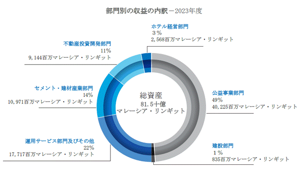
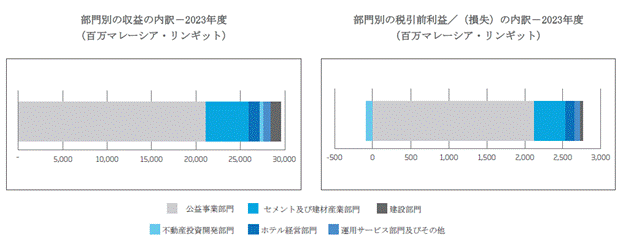

下記「第３ ４ 経営者による財政状態、経営成績及びキャッシュ・フローの状況の分析」を参照のこと。
下記「第５ ３ コーポレート・ガバナンスの状況等」「サステナビリティ・ガバナンス」を参照のこと。
当年度中、当社の取締役会（以下「取締役会」という。）は、ブルサ・セキュリティーズのメイン・マーケット上場規則（「上場規則」）及びコーポレート・ガバナンスに関するマレーシアン・コード（「本規範」）の方針及び実施規定を確実に遵守するため、当社及びその子会社（総称して「当グループ」）の内部統制とリスク管理のシステムの見直しを行った。
取締役会は、取締役会が株主の投資及び当グループの資産の保護を目的とした安定したリスク管理及び内部統制システムの維持につき全責任を有していること、並びにかかる統制が重大な過失、詐欺又は損失が発生するリスクに対して合理的ではあるが完全ではない保証を提供するに止まるものであることを認識している。
ここに記載されているのは、2023年６月30日に終了した会計年度における、当社による本規範の該当条項の遵守の概要である。
取締役会の責任
取締役会は、株主の投資及び当グループの資産を保護するための適切な統制環境の枠組みの確立を含む、安定したリスク管理及び内部統制のシステムの維持、並びに当該システムの適切性と完全性の審査につき最終的な責任を負っている。内部統制のシステムは財務の管理だけでなく、業務及び法令遵守の管理並びにリスク管理などをカバーしている。しかしながら、取締役会は、当グループのリスク管理及び内部統制のシステムの審査が共同で行われる継続的なプロセスであり、事業目的の達成に失敗するリスクを排除するものではなく、むしろかかるリスクを管理し、詐欺行為及びエラーの可能性を最小限にするためのシステムであると考えている。したがって、当グループのリスク管理及び内部統制のシステムは、重大な誤表示、詐欺及び損失に対する、合理的ではあるものの、絶対的ではない保証を提供するに止まる。
取締役会は、当年度について、当グループのリスク管理及び内部統制（財務その他も含めて）が当グループの効率的かつ効果的な事業活動、財務情報の信頼性及び透明性、並びに法令及び規則の遵守を合理的に保証するものであると考えている。
当グループの内部統制の主な特徴
取締役会は、継続的な監視及び統制活動の効率性の審査の手続を含む、安定した内部統制構造の維持、並びに当グループ及びその従業員の行動の統治に専心している。当グループの内部統制システムの主な内容の概略は、以下のとおりである。
・承認手続
当グループは、承認手続を明確に定義し、説明責任を明確に定め、取締役会及び上席経営陣内で承認、許可及び管理に関する厳格な手続を有している。承認レベル、職務分掌及びその他の統制手続などの責任のレベルは、株主の最善の利益に鑑みた効率的かつ独立した管理を促すために当グループ内に通知されている。
・権限レベル
当グループは入札、設備投資プロジェクト、買収及び事業の処分並びにその他の大規模な取引に関して、会長、取締役社長、常勤取締役に対して権限レベルを委任している。一定の限度額を超える資本及び収益に関する承認は、取締役会がこれを決定する。その他の投資に関する判断は、権限の範囲に従って承認される。総合的な評価及び監視手続は、すべての大規模な投資に関する決定に適用される。企業への融資及び投資資金の拠出の要件、外貨及び金利リスク管理、投資、保険並びに署名権者の指名等を含む主な財務に関する事項の決定については、取締役の承認が必要である。
・財務成績
中間財務成績は、ブルサ・セキュリティーズに開示する前に、監査委員会が審査し、監査委員会の提言に基づき取締役会が承認する。年次財務成績及び当グループの事業の状況の分析は、外部の監査人による審査と監査を受けた後に株主に開示される。
・内部の法令遵守
当グループは、主な従業員が年間目標の達成を評価するべく内部で審査する経営陣のレビュー及び報告を通じて内部の財務管理の遵守を監視している。内部の方針や手続の更新は、リスクの変化、又は経営上の欠陥部分の是正、並びに当グループに関連する法令及び規則の遵守要件の変化を反映するために行われる。内部監査は、手続の遵守の監視及び精査を行い、提供された財務情報の整合性を評価するため、特定の期間について体系的に取り決められる。
当グループの内部統制の主な手続
内部統制のシステムの適切性と整合性を審査するために取締役会が定めた主な手続は、以下のとおりである。
・内部監査機能
当グループの内部監査機能は、その内部監査部門（「YTLIA」）により提供される。YTLIAは、経営陣が導入した内部統制システムの効率性及び有効性につき保証を提供し、監査委員会に直接報告を行う。また、YTLIAは、当社の上場企業であるYTLパワー・インターナショナル及びマラヤン・セメント・バーハッド、YTLホスピタリティREITの管理会社としてのピンタール・プロジェック・センドリアン・バーハッド並びにそれぞれの企業グループの業務を遂行しており、これらの上場企業の監査委員会にこれらに関連する事項を直接報告している。
内部監査機能の説明は、監査委員会報告書に記載されており、YTLIAの人員とリソースに関する詳細は、本報告書に記載されているコーポレート・ガバナンスの概要説明に記載されている。この情報は、当社ウェブサイト（www.ytl.com）の「ガバナンス」のページでも閲覧可能である。
YTLIAは、監査対象とする活動から独立して運営されており、内部統制システムの効率性と有効性と重大なリスクに重点を置いて実施された監査の結果につき、監査委員会に対して定期的に報告を行う。監査委員会は、YTLIAが提起した重大な課題及び事項につき審査及び評価を行い、経営陣によって適切かつ迅速な是正策が講じられることを保証する。
当年度中のいずれの脆弱性又は問題も、当社の年次報告書で開示を要求される、該当する方針若しくは手続、上場規則又は推奨される業界の慣行に対する違反には当たらなかった。
英国に拠点を置くウェセックス・ウォーター・リミテッド・グループ（「ウェセックス・ウォーター」）の会社は、上記の内部監査の対象には含まれていない。ウェセックス・ウォーターの事業は、同社の規制当局であり、政府機関である水道事業管理庁（Ofwatとして知られる）の厳格な財務及び業務管理の対象となっており、その規制ライセンスによっても管理されている。ウェセックス・ウォーター・サービシズ・リミテッド（「WWSL」）は、独自の内部監査部門を有している。内部監査部門はWWSLの監査委員会に報告し、内部監査委員会は優良な財務慣行の維持とこれらの慣行の整合性を保つための管理を監督する責任を有している。同部門は、年次財務諸表を審査し、取締役会と外部の監査人とのコミュニケーション・ラインを提供する。同部門には、その権限及び義務に関する正式な調査範囲があり、調査結果はウェセックス・ウォーターの親会社であり、当社の登録された子会社であるワイ・ティー・エル・パワー・インターナショナル・バーハッド（「YTLパワー」）の監査委員会に報告される。
同様に、YTLパワーの子会社であり、シンガポールに拠点を置くYTLパワーセラヤ・プライベート・リミテッド・グループ（「YTLパワーセラヤ」）のグループ会社はYTLIAの対象に含まれていない。YTLパワーセラヤの事業は、同社の規制当局であり、シンガポールの通商産業省の法定機関であるエネルギー市場監督庁（EMA）の厳格な財務及び業務管理の対象となっている。YTLパワーセラヤは内部監査を著名な専門会社に委託し、当該専門会社は社内の監査委員会に報告しており、その調査結果はYTLパワーの監査委員会にも報告される。YTLパワーセラヤは、内部統制及びシステムを、財務諸表の整合性と信頼性を合理的に保証できる内容に維持する義務がある。
内部統制のシステムは、事業環境の変化に伴い、今後も審査、改善又は更新されていく。取締役会はYTLIAによる評価により、内部統制システムの継続性と効果を定期的に確認する。取締役会は、現在の内部統制システムが当グループの利益を守るために有効なシステムであると考えている。
・執行理事会／上席経営陣会議
当グループは、会長、取締役社長、常勤取締役と部門長／シニア・マネージャーから構成される執行理事会／上席経営陣会議を定期的に開催している。この会議の目的は、緊急を要する事由について審議し、決定し、財政及び財務に関する重要事項を検討、特定、協議及び解決し、当グループの財務状況を監視することである。また、新しい金融情勢や懸念される事項が早期に明らかにされ、迅速に対処することを確保する役割も果たしている。ここでの決定事項は、すべての関係する従業員レベルに直ちに効率的に伝えることができる。これらの会議を通じて、執行理事会／経営陣は関係する事業部門における業務上又は財務上の重大なリスクを特定することができる。
・現場の視察
取締役社長、常勤取締役は、生産現場や事業部門、不動産開発の現場へ赴き、様々なレベルの従業員と対話し、協議し、実行された戦略の有効性を直接評価する。現場の視察は、効率的な運営のために、透明性が高く、開かれたコミュニケーション経路が経営陣及び各取締役社長、常勤取締役によって維持されることを保証する目的で行われている。
当グループのリスク管理体制の主な特徴及び手続
当グループの安定した財務プロファイルは、事業活動の中で発生するリスクを軽減するための内部統制及びリスク管理のシステムの結果である。これは当グループの主要な公共事業部門における規制資産取得及びノンリコース・ベースでの融資獲得の戦略に象徴されている。これらには、ワイ・ティー・エル・パワー・インターナショナル・バーハッドの完全子会社、ウェセックス・ウォーター及びYTLパワーセラヤ、PTジャワ・パワー及びアタラット・パワー・カンパニーPSCに対する持分が含まれる。これらの資産は事業コストと収益の流れが予測しやすい、という共通点があり、これにより安定した、予測可能なキャッシュ・フロー及び利益が生み出され、それぞれの市場における安定した規制環境により更に強化されている。
当グループの事業活動のすべての分野は何らかのリスクを伴うことを取締役会は認識している。当グループは、経営陣が定義されたパラメーター及び基準に従ってリスク管理を行うための有効なリスク管理システムの維持を保証するよう努めており、株主価値の向上のために当グループの事業の収益性を促進している。
取締役会は当グループのリスク管理体制について全責任を負っている。当グループが直面する重大なリスクの特定、分析及び管理は上席経営陣が各事業レベルで行い、これらの調査結果を評価分析し、取締役会に報告する場合には監査委員会がこれを行うなど、あらゆるレベルで行われる継続的なプロセスである。同時に、YTLIAはYTLIAの中間監査において、当グループが直面する重大なリスクの特定及び分析を行い、その結果を監査委員会に報告する。当年度中、取締役会のリスク管理体制における機能は、内部統制システムの適切性と全体性を保証するために経営会議に取締役社長、常勤取締役が参加することにより実行された。当グループの事業に影響を与える重大なリスクの特定及び分析のプロセスの検討と更新、並びにこれらのリスクを管理するための方針及び手続に重点が置かれている。
当グループの事業活動は、市場リスク（為替リスク、金利リスク及び価格リスク）、信用リスク、流動性リスク及びキャピタル・リスクなど、様々な金融リスクを伴う。当グループ全体の金融リスクの管理の目的は、当グループが株主価値を創造することを保証することである。当グループは金融市場の予測不可能性に焦点を合わせ、財務業績に与える悪影響の可能性を最小限に抑えることを目標としている。金融リスク管理は定期的なリスク評価、内部統制システム及び当グループの金融リスク管理方針に従って実施されている。取締役会はこれらのリスクを評価し、適切な管理環境体制について承認を行う。当グループのリスク管理の詳細については、「第３ ４ 経営者による財政状態、経営成績及びキャッシュ・フローの状況の分析」に記載する。
経営陣は、当グループ内でのリスク意識を高め、各自の担当事業に該当する重大なリスクの特定及び分析を行い、適切な内部統制手続の設定と運営の義務がある。これらのリスクは、継続的に評価され、リスク管理の不備、情報システムの故障、競争、自然災害及び規制など社内外のリスクに関するものが含まれる。重大なリスクに影響を与える事業の重大な変化及び外部の環境については、リスクを抑制するためのアクション・プランの策定の中で取締役会に対して経営陣が報告する。
システム改善の必要性がある場合には、取締役会は監査委員会及び内部監査人の推奨する内容を検討する。
取締役会は今後も各事業分野において直面する事業、営業及び財務リスクの特定、評価及び管理を行い、また定期的に戦略を見直して、リスクが軽減され、管理されているかを確認し、当局が発行するガイドラインを遵守する。これは、当グループが株主持分及び株主価値を保護し、向上させるために常に変化し続ける事業環境に効率的に反応できることを確実にするためである。
４ 【経営者による財政状態、経営成績及びキャッシュ・フローの状況の分析】
(1) 業績等の概要
① 事業実績
2023年度及び2022年度の当グループの主な事業部門別の売上高及び税引前利益は以下のとおりである。
(監査済)
|
|
2022年度 |
2023年度 |
||
|
売上高 |
百万マレーシア・リンギット(百万円) |
百万マレーシア・リンギット(百万円) |
||
|
建設部門 |
1,136.2 (35,961) |
4.69％ |
1,203.5 (38,091) |
4.06％ |
|
ホテル経営部門 |
693.7 (21,956) |
2.86％ |
1,313.8 (41,582) |
4.44％ |
|
セメント・建材事業部門 |
3,891.0 (123,150) |
16.05％ |
4,821.2 (152,591) |
16.28％ |
|
運用サービス部門及びその他 |
304.2 (9,628) |
1.25％ |
803.0 (25,415) |
2.71％ |
|
不動産投資開発部門 |
717.4 (22,706) |
2.96％ |
407.1 (12,885) |
1.37％ |
|
公共事業部門 |
17,499.0 (553,843) |
72.19％ |
21,067.4 (666,783) |
71.14％ |
|
合計 |
24,241.5 (767,243) |
100.00％ |
29,616.0 (937,346) |
100.00％ |
|
税引前利益 |
百万マレーシア・リンギット(百万円) |
百万マレーシア・リンギット(百万円) |
||
|
建設部門 |
62.3 (1,972) |
3.43％ |
10.0 (317) |
0.36％ |
|
ホテル経営部門 |
-58.4 -(1,848) |
-3.21％ |
160.2 (5,070) |
5.87％ |
|
セメント・建材事業部門 |
264.2 (8,362) |
14.53％ |
383.2 (12,128) |
14.04％ |
|
運用サービス部門及びその他 |
479.4 (15,173) |
26.36％ |
114.8 (3,633) |
4.21％ |
|
不動産投資開発部門 |
192.5 (6,093) |
10.59％ |
-71.8 -(2,272) |
-2.63％ |
|
公共事業部門 |
878.4 (27,801) |
48.30％ |
2,132.7 (67,500) |
78.15％ |
|
合計 |
1,818.4 (57,552) |
100.00％ |
2,729.1 (86,376) |
100.00％ |
② 概況
当グループは、2023年６月30日に終了した事業年度において、過去最高の売上高及び利益を計上し、目覚ましい業績を達成した。
公益事業部門は、発電事業を中心に好調に推移した。セメント部門も需要の高まり及び販売価格の上昇により業績が向上し、ホテル経営部門は世界的に観光産業が回復に向かったことにより業績が大幅に改善した。当期の売上高は、前年度の242億マレーシア・リンギットから22％増加し、296億マレーシア・リンギットであった。当期の税引前利益は、前期の18億マレーシア・リンギットから50％増加し27億マレーシア・リンギットに達した。
当社の取締役会は、1985年にクアラルンプール証券取引所に上場して以来39期連続の配当実績を有し、普通株式１株あたり4.0センの中間配当を宣言した。
当グループの長期的な株主及び利害関係者の皆様はご存じのとおり、当グループの戦略の中核は、事業の永続的な実現性及び持続可能性を維持することにある。そして、当年度の業績を通して、かかる戦略の中核が当グループの成功及びレジリエンスにとって重要であることを実証した。
公益事業部門では、2008年の世界金融危機の際に買収したYTLパワーセラヤが、その後の世界的な景気後退及びボラティリティに対する当グループの防波堤の役割を果たした。
近年、市場を悩ませている構造的な問題をうまく切り抜け、現在では好転し、安定を取り戻しつつある。
一方、2010年には、４G通信事業でデジタル変革への道を歩み始め、半島全域での高速インターネットアクセスの大衆化を先導した。当年度のデジタル変革の新事業の進展は、先進的な新技術及びアプリケーションの可能性を切り開くものであり、これらの新分野の運営及び成長においても、同様の長期的視点に立って取り組んでいく。
同様に、当グループはウェセックス・ウォーターを20年以上所有しており、英国の上下水道会社の単独所有者としては最長である。当グループには責任ある所有者としての実績があり、ウェセックス・ウォーターはこの分野で最も優れた業績を上げている。事業は規制の逆風に直面しているものの、当グループは利害関係者のために最善の結果を出せるよう引き続き努力する。
一方、今年のセメント事業は好調に推移した。当グループは、建設業とともに、数十年にわたり前述のような重要な分野に携わっており、大規模なインフラから商業用の高層ビル、住宅まで、マレーシアの至るところで目にすることができる。当グループは、マレーシアにおける最大の国産セメント事業として、当グループの長期的な展望に加えて、マレーシアをその開発目標及び経済的大望に向けて前進させるために必要な重要な投資を理解し、また、その利害関係を共有している。
不動産面では、クアラルンプールのスントゥル、英国ブリストルのブラバゾン、日本の北海道ニセコビレッジの開発等、主要な基本計画プロジェクトを引き続き推進した。各開発は、それぞれが対象とする特定の地域及びコミュニティの将来的なニーズを満たすために綿密に構想・設計されたもので、当グループの長期的展望を体現している。当グループは、短期的に事業を行うのではなく、地域社会の幸福及びより広範な市民的価値を守るために、地域社会の開発を行っている。
パンデミック関連の規制が緩和され、当社が事業を展開している国々が正常な状態に戻ったことで、世界の観光業界では、インフレ率の上昇や金利の上昇などの経済的要因による潜在的な下振れリスクに直面しながらも、ペントアップ需要が顕在化し、ホスピタリティ部門が回復した。当グループのホテル経営部門は好調な回復を遂げ、世界各地のホテルが需要の本格化に乗じて、当グループのホテルの特徴である高水準のサービス及び体験を顧客に提供している。
当グループの継続的な成功、レジリエンス及び持続可能性を確保するための唯一の実行可能なアプローチは、当グループを取り巻く広範な環境及び当グループの活動が影響する多くの利害関係者のために、長期的な展望を持つことである。
当グループは、数百万もの消費者に優れた商品及びサービスを提供してきた長年の実績があり、今後もそれを堅持していく。また、当グループは、すべての利害関係者のために、事業全体にわたって最善の成果を提供し続けることを確信している。
当社及び当グループの当年度の売上高は、前年度の24,241.5百万マレーシア・リンギットに対して、29,616.1百万マレーシア・リンギットに達した。当年度の税引前利益は、2,729.1百万マレーシア・リンギットに達し、前年度の1,818.4百万マレーシア・リンギットと比較して50％増加した。一方、当期の税引後利益は、2,122.3百万マレーシア・リンギットに達し、前年度の1,449.4百万マレーシア・リンギットと比較して46％増加した。
このように業績が改善したのは、主に公益事業の業績向上よるものであるが、セメント事業及びホテル事業も好調に推移した。
当社の取締役会は、基準日を2023年11月10日、支払日を2023年11月29日として、普通株式１株あたり4.0センの中間配当を宣言した。
当年度における公益事業部門の収益の増加は、小売価格及びプール価格の上昇並びにシンガポール・ドル高を背景に、主にシンガポールの発電事業によるものであった。上下水道事業では、取引の改善及び小売以外の新規契約の増加がみられたが、電気通信事業のプロジェクト収入が減少したことにより相殺された。
公益事業部門における税引前利益の増加についても発電事業が牽引したが、上下水道事業及び通信事業部門では、それぞれ指数連動債の金利上昇及びプロジェクト収益の減少による影響を受けた。
セメント・建材事業部門は、全部門で記録された需要の増加及び販売価格の適正化により、売上高及び税引前利益が増加した。
一方、建設部門では、運営費用の増加が当年度の税引前利益に影響したものの、建設工事が増加したことにより増収となった。当グループの不動産投資開発部門は、マレーシア及び英国における進行中の物件の販売により、前年度に計上した一時的な利益を調整後、増収となった。当期の税引前損失の減少は、主にYTLランド・アンド・デベロップメント・バーハッドが保有する売手形の公正価値の増加によるものであり、前年度に計上された一時的な利益を調整した後のものである。
ホテル経営部門においては、国境の開放及び経済活動の再開等のパンデミック規制の緩和に伴い、当グループのホテル及びリゾート事業の業績改善により増収となり、当年度において税引前利益が増加した。
当グループの運用サービス部門及びその他は、当グループが45％の持分を保有するヨルダンの554メガワットのオイルシェール火力発電プロジェクトの商業運転に伴い、受取利息が増加したこと並びに未払技術サービス収入及び株主の貸付利子が認識されたことから、当期において増収となった。当期の税引前利益は、前年度のエレクトラネットの売却益がなかったため減少した。
サステナビリティ
当グループは、当年度、環境目標を追求するために、グリーンかつ循環的な経済への移行に向けた取組みを順調に進めた。その中でも重要な点は、ジョホール州クーライで開発中のYTLグリーン・データ・センター・パークのフェーズ１に向けて、11億マレーシア・リンギットのグリーン・ローン枠を獲得し、ゴールドLEED（Leadership in Energy and Environmental Design）認証取得を確約したことである。
2023年１月、テネガ・ナショナル・バーハッド（「TNB」）の完全子会社であるTNBパワー・ジェネレーション・センドリアン・バーハッドとの間で、新たに改良したインターコネクターを通じて100メガワットのシンガポール向け電力の輸出入に関する合弁契約を締結した。
当グループは、マレーシア及びシンガポールにおける独自の位置付けにより、長期的にはマレーシアからのエネルギー輸出を促進し、マレーシアが再生可能エネルギー発電能力の成長を加速させていく中で、シンガポールの既存の発電能力を補完することを目指している。
また、シンガポールが、2025年までに公営住宅の駐車場に電気自動車用の充電器を12,000台設置するという目標を踏まえて、2022年11月にシンガポールSMRTコーポレーション・リミテッドの完全子会社との間で合弁会社チャージエコ（ChargEco）を設立し、シンガポール国内で1,200台の電気自動車用の充電器を設置・運用・維持している。
建材面において、当グループは、建設産業開発委員会（CIDB）の研究開発部門である建設研究所（CREAM）と覚書を締結し、建設業界の労働力開発、研究開発の取組みの強化、業界関係者の持続可能な建設慣行に対する理解向上に係る取組みを支援している。詳細については、当社の年次報告書と併せて発行する「サステナビリティ・レポート2023」を参照のこと。
見通し
当グループの中核事業の見通しは引き続き健全であり、新規事業の開発及び展開に伴い、さらに強化される見込みである。
当年度の堅調な業績は、来年度にとっても好ましいことである。インフレ率の上昇、金利の引上げその他の経済要因による潜在的な下振れリスクによってもたらされる開発の流動性及び市場環境の変化の速度は、依然として懸念事項である。しかし、当グループは、今後も積極的に事業を運営し、事業の長期的な展望を維持し、利害関係者の価値を守るために必要な措置を講じていく。
③ 2023年度と2022年度との比較
１ 売上高
当グループの当年度の売上高は、前年度の24,241.5百万マレーシア・リンギットに対して、5,374.5百万マレーシア・リンギット、すなわち22.17％増加し、29,616.0百万マレーシア・リンギットとなった。不動産投資開発部門を除き、すべての報告部門において増収となった。
２ 税引前利益
当年度の当グループの税引前利益は、前年度の1,818.4百万マレーシア・リンギットから2,729.1百万マレーシア・リンギットに増加した。これは50.1％の増加に相当し、主にホテル経営部門、セメント・建材事業部門及び公益事業部門における増益によるものである。
３ 当グループへの課税
当年度の当グループへの課税は、前年度の369.0百万マレーシア・リンギットに対して606.8百万マレーシア・リンギットに増加した。課税額が増加した主な要因は、YTLパワー及びYTLセメントグループにおける税引前利益の増加によるものである。
４ 少数株主持分
少数株主持分は、前年度の754.2百万マレーシア・リンギットから当年度の1,026.6百万マレーシア・リンギットヘと36.1％増加した。これは主にYTLパワー及びYTLセメントグループからの増益によるものである。
５ 税引後利益及び少数株主持分
上記の結果、当グループの税引後利益及び少数株主持分は、前年度の695.1百万マレーシア・リンギットに対し、当年度において400.6百万マレーシア・リンギット、すなわち57.6％増加し、1,095.7百万マレーシア・リンギットを計上した。純利益が増加した主な要因は、公益事業部門の発電事業が好調に推移したこと、セメント・建材事業部門が需要の増加及び販売価格の改善を達成したこと並びにホテル経営部門が世界的な観光産業の回復を受けて業績を大幅に改善したことによるものである。
(2) 生産、受注及び販売の状況
(1)「業績等の概要」を参照のこと。
(3) 財政状態、経営成績及びキャッシュ・フローの状況の分析
本項には、将来予想に関する記述が含まれているが、これは当該事業年度終了時点での当社の予測又は見積りに基づくものである。
目標及び戦略
当グループは、価値を最大限にし、長期的に実行可能かつ持続可能な堅固な事業を構築及び運営し、すべての株主に利益をもたらすことを目標に、規制されたその他公益事業資産及びセメント、建設、不動産開発及びホテル経営のコア・コンピテンシーに関連する事業に注力しながら、国内外における未開発地域の開発及び戦略的買収を通じて自らの収益基盤の地理的多様化及び拡大を追求している。
また、当グループは、その収益の大部分を利権・認可に基づく規制されたその他さまざまな公益事業資産の運営から得ており、これにより、当グループは、マレーシア国内外において、安定した利益をあげ、不安定な経済及び変化する事業状況から生じる下方リスクを軽減することができている。
当グループの戦略の主な要素は、以下で構成されている。
・ 特に、規制された公益事業の分野における未開発地域の開発及びマレーシア国内外における戦略的買収を通じた当グループの収益基盤の多様化及び拡大 当グループは、長期の利権に基づき運営している規制された資産及びそのコア・コンピテンシーに関連するその他の事業を取得する戦略を追求している。当グループの規制された公益事業は、継続的な成長を示しており、その資産のうち規制された資産の価値は時間の経過とともに増大している。かかる分野における当グループの既存の海外事業は、引き続き安定した利益を生んでおり、海外での買収は、所得の流れを多様化し、当グループが各国及び各業界に固有のリスクを回避できるようにしている。
・ 当グループの中核事業の成長及び強化 事業を成長させるための当グループの戦略は、当グループのコア・コンピテンシーである専門性を活用することである。特に、発電事業、上下水道事業、電気通信、建設請負、不動産開発及び投資、セメントその他の工業製品及び必需品の製造、ホテル開発及び経営（レストランの経営を含む。）の分野において専門知識を活用することを試みている。
当該戦略を実行するにあたり、当グループは、事業の長期的な持続可能性及び実行可能性を確保するために、ガバナンス、コンプライアンス及び事業の経済的・環境的・社会的影響の管理に重点を置いている。
・ 当グループの資本構造の継続的な最適化 当グループは、デット・ファイナンス及びエクイティ・ファイナンスの組み合わせを最適化し、買収の機会に投資するための内部資金及び外部金融の利用可能性を確保することにより、バランスの取れた財政構造を維持している。当グループの成長戦略の重要な要素は、その買収及び未開発地域事業の負債要素を、ノンリコースの融資で賄う慣行である。これにより、当グループが、会社から独立した単体の有効な事業にのみ投資を行うことが保証されている。
・ 当グループの事業収益を最大化し、顧客基盤を拡大するための運営効率の向上 当グループは、その公益事業及びセメント工場が、平均して、それぞれの業界の最高効率水準の範囲内で運営されていると確信しており、新しい技術、生産技術及び情報技術の適用を通じて、可能な限り運営効率を一層高めている。
財務業績の評価
当グループの財務業績
当グループは、前年度の24,241.5百万マレーシア・リンギットの収益に対して、当年度は29,616.1百万マレーシア・リンギットの収益を計上した。当年度の税引前利益は、前年度の1,818.4百万マレーシア・リンギットから2,729.1百万マレーシア・リンギットに増加した。
当グループの海外事業は、当グループの収益及び非流動資産のそれぞれについて、前年度の77％及び74％に対して、当年度は約79％及び76％を占めており、引き続き当グループの収益及び非流動資産の最大の割合を占めている。
部門別の財務業績


|
|
|
|
||
|
|
部門別収益 |
部門別税引前利益／（損失） |
||
|
|
2023年度 |
2022年度 （修正再表示済み） |
2023年度 |
2022年度 （修正再表示済み） |
|
|
百万マレーシア・リンギット |
|||
|
公益事業部門 |
21,067.4 |
17,499.0 |
2,132.7 |
878.4 |
|
セメント及び建材産業部門 |
4,821.2 |
3,891.0 |
383.2 |
264.2 |
|
建設部門 |
1,203.5 |
1,136.2 |
10.0 |
62.3 |
|
不動産投資開発部門 |
407.1 |
717.4 |
(71.8) |
192.5 |
|
ホテル経営部門 |
1,313.8 |
693.7 |
160.2 |
(58.4) |
|
運用サービス部門及びその他 |
803.0 |
304.2 |
114.8 |
479.4 |
|
|
29,616.0 |
24,241.5 |
2,729.1 |
1,818.4 |
|
|
|
|
|
|
(a)公益事業部門
公益事業部門は、商業向けインフラ事業における小売価格及びプール価格の上昇、並びにマレーシア・リンギットに対するシンガポール・ドル高により、前年度の17,499.0百万マレーシア・リンギットの収益に対して当年度は21,067.4百万マレーシア・リンギットの収益を計上した。一方、上下水道事業部門では、取引が改善し、小売以外の新規契約が増加したが、プロジェクトの減少に伴う電気通信事業の減収により一部相殺された。
公益事業部門における当年度の税引前利益は2,132.7百万マレーシア・リンギットとなり、前年度の878.4百万マレーシア・リンギットから増加した。これは、発電事業によるものであり、上下水道事業における指数連動債に係る金利負担、並びに電気通信事業におけるプロジェクト収益の減少が影響した。
公益事業部門は、引き続き当グループ最大の事業部門であり、当年度の売上高及び税引前利益のそれぞれについて、前年度の72％及び48％に対して、当年度は71％及び78％を占めている。
(b)セメント及び建材産業部門
セメント及び建材産業部門は、前年度の3,891.0百万マレーシア・リンギットの売上高に対して当年度は4,821.2百万マレーシア・リンギットの売上高を、前年度の264.2百万マレーシア・リンギットの税引前利益に対して、当年度は383.2百万マレーシア・リンギットの税引前利益をそれぞれ計上した。業績改善は、全部門で記録された需要の増加及び販売価格の適正化が主因である。
当年度について、セメント及び建材産業部門は、売上高について当グループで第二位の事業部門であり、前年度が売上高及び税引前利益のそれぞれ16％、15％を占めていたのに対して、当年度では売上高及び税引前利益のそれぞれ16％、14％を占めている。
(c)建設部門
建設部門の売上高は、主に建設工事が増加したことにより、前年度の1,136.2百万マレーシア・リンギットに対して当年度は1,203.5百万マレーシア・リンギットをそれぞれ計上し増収となった。
当年度の税引前利益は、運営費用の増加により、前年度の62.3百万マレーシア・リンギットに対して10.0百万マレーシア・リンギットとなった。
(d)不動産投資開発部門
不動産投資開発部門の売上高は、主に、クアラルンプール及びイポーで進行中のプロジェクトによる売上計上に加え、ワイ・ティー・エル・プロパティ・ホールディングス（UK）リミテッド（「YTLプロパティUK」）が実施した開発プロジェクトにおける売上げが計上されたことにより、前年度の315.1百万マレーシア・リンギット（前年度に計上された約402.3百万マレーシア・リンギットの一時的な土地売却益を調整後）に対して、当年度は407.1百万マレーシア・リンギットをそれぞれ計上した。
同部門は、前年度の113.5百万マレーシア・リンギットの税引前損失（土地売却益306百万マレーシア・リンギットを調整後）に対して、当年度は71.8百万マレーシア・リンギットの税引前損失に減少した。これは、主にYTLランド・アンド・デベロップメント・バーハッドが保有する売手形の公正価値の増加によるものであり、完全子会社による投資不動産の公正価値損失により一部相殺された。
(e)ホテル経営部門
ホテル経営部門の売上高は、前年度の693.7百万マレーシア・リンギットに対して、当年度は1,313.8百万マレーシア・リンギットに増加した。また、前年度の58.4百万マレーシア・リンギットの税引前損失に対して、当年度は160.2百万マレーシア・リンギットの税引前利益を計上した。これは、国境の開放及び経済活動の再開等のパンデミック規制の緩和に伴い、当グループのホテル・リゾートの業績が改善したことが主因である。
(f)運用サービス部門及びその他
運用サービス部門及びその他の売上高は、ヨルダンのシェールオイル火力発電開発（「ヨルダン・プロジェクト」）の商業運転に伴う受取利息の増加及び未収技術サービス料の計上により、前年度の304.2百万マレーシア・リンギットに対して当年度は803.0百万マレーシア・リンギットをそれぞれ計上した。
当年度の税引前利益は、前年度の479.4百万マレーシア・リンギットから114.8百万マレーシア・リンギットを計上した。これは主に、為替差益の増加、受取利息の増加及びヨルダン・プロジェクトからの未収技術サービス料により一部相殺されたものの、エレクトラネットの投資口を処分することに伴う純利益がなかったためである。
各部門の状況
公益事業部門
発電事業
当年度において、YTLパワーセラヤは、10,040ギガワット時の電力を販売し、前年同期比で12.6％増加した。また、発電量の市場占有率は、当グループによる前年度のテーザー・パワー・プライベート・リミテッドによるトゥアスプリング発電所の買収が完了したことを受け、年率3.9％の大幅な増加となった。電力市場は安定しており、シンガポール卸電力市場では、電力供給が急増した暑い月を除き、価格変動が小さくなった。さらに、コンバインド・サイクル式及び熱併給式の発電設備の全般及び定期的な整備点検を予定どおり完了し、発電所の信頼性を維持することに注力した。複数の主要な対策は過去数年間にわたって順次実施され、強制停止を防止するための故障モード影響解析（FMEA）及びマスター・トリップ・ロジック・レビュー、停止の再発を防止する根本原因分析（RCA）、発電所の異常を早期に発見し是正するための運用上の「ニアミス」インシデント・フレームワーク等により、発電所の信頼性が向上した。
YTLパワーセラヤは、循環水ポンプ２台用の所内負荷を、トゥアス・サウス・ディサリネーション6.6キロボルト配電盤から当グループの配電盤に転換することに成功し、毎月の大幅なコスト削減及び配電の最適化を実現した。
また、発電所のパフォーマンス、トレーニング、セーフティ・トラッキング・ダッシュボード、セルフサービス・アプリケーションを利用した運用のデジタル化等、複数のデジタル化プロジェクトも実施されている。
当グループは、品質、環境、エネルギー、安全衛生及びサイバーセキュリティの各管理システムにおいて、高い基準を維持することを引き続き重視した結果、ISO9001、ISO14001、ISO45001、ISO27001及びBizSafe Starの認証の更新も無事完了した。また、当年度では、シンガポールの国家環境庁のエネルギー管理システム要件に基づくISO50001規格の遵守状況を監査した。さらに、シンガポールの化学産業向けに特別に開発された労働安全衛生管理システムの規格であるSS 651規格の取得にも成功した。
当年度において、YTLパワーセラヤの継続的なデジタル変革の課題に対する支援では、データ及び分析、アプリケーションの近代化、サイバーセキュリティという３つの主要分野に焦点を当てた。継続的な進歩に向けた取組みの一環として、同社は、１年間で複数のアップグレード、クラウド移行、リプラットフォームプロジェクト等、アプリケーションの近代化を完了した。
一連の取組みにより、システムのパフォーマンス及び効率が向上し、拡張性が高まり、全体的なセキュリティ態勢が強化され、同社のコンプライアンスが確保された。
小売事業
YTLパワーセラヤの電力小売事業者であるジェネコは、13.5％の小売電力市場シェア（システム総需要に対する小売量の割合で算出。）を占め、当年度の販売量は7,408ギガワット時であった。小売市場は、家庭用・商業用・工業用の各分野の消費者で構成される。
ジェネコは、2023年４月、環境に配慮したアドオンであるパワー・エコ・アドオン2.0の提供を、家庭用として契約のどの時点でも利用できるように拡大した。2023年６月30日現在、ジェネコの3,408人の顧客はパワー・エコ・アドオンを選択している。同社は、顧客に環境に対する取組みを促すことで、当該2.0イニシアティブを通じて、「シンガポール・グリーンプラン2030」を支持し、国家のためにより持続可能な未来を築くことに取り組んでいる。
ジェネコは、デジタル化の一環として、2023年５月にスモール・アンド・ミディアム・ビジネス・オンラインをリリースし、１拠点かつ月間負荷が20メガワット時未満の中小企業の顧客がオンラインで契約できるようにした。当該セルフサービスポータルは、運用要件を最適化し、ビジネスプロセスを自動化する。2021年６月30日現在、２か月足らずで、123の中小企業が当該ポータル経由で契約した。
燃料管理事業
YTLパワーセラヤの燃料管理部門は、より高いタンクリース料率の確保及びインフラ資産の最適化という戦略的アプローチにより、レジリエンスを発揮し、目覚ましい業績を達成した。
これは、ロシア・ウクライナ情勢のような地政学的対立から世界的なエネルギー安全保障上の懸念に至るまでの石油業界が抱える課題に加え、予想以上に世界的な景気回復が遅れ、かつ、インフレ圧力が金利上昇を招いていることを踏まえると、特筆すべきことである。
同部門は、当年度において、8.24百万メートルトンの燃料石油及びディーゼル燃料を効率的に管理し、前年の7.48百万メートルトンから顕著に増加した。さらに、ターミナルに停泊した燃料船及び貨物船の隻数は、前年度の644隻に対し、当年度は837隻に大幅に増加し、停泊所の平均利用率は41.85％となり、最適な資源活用に取り組んでいる。
タンクリース及び燃料管理業務の最適化に向けた戦略的な取組みは、同部門の成功をさらに下支えし、これらの中核的な側面の強化に揺るぎなく注力することで、燃料管理部門において同社を継続的な成長軌道に乗せていく。
上下水道事業
ウェセックス・ウォーターは、英国でのエネルギー価格の高騰及びインフレにより、厳しい年に直面した。しかし、その強固な財務基盤により、同社は、顧客及び地域社会に対して一流サービスレベルの提供を継続した。
ウェセックス・ウォーターは、不可欠なサービスを提供する会社として、そのサービスを最も必要としている顧客及び地域社会への支援の動員を優先した。顧客には、ウェセックス・ウォーターの個別支援プログラムの下で、様々なスキーム及び低税率の関税を通じて、広範な財政・債務支援を引き続き提供した。これは、インフレ及び生活費の高騰に顧客の所得がますます圧迫されたため、当年度に増額された。同部門は、今後数年間で金融支援スキームの顧客数を３倍に増やし、支援をより簡単かつ迅速に利用できるようにすることを目指している。
困難な状況にもかかわらず、水の味、臭い又は見た目に関する顧客からの苦情は４年連続で減少した。ウェセックス・ウォーターは、家庭及び職場の水質に関する目標を達成し、COVID-19以前の水準に戻った。また、供給の中断時間は過去最高の結果となり、2021年の平均４分12秒から４分10秒へとさらに短縮された。
排水遵守率は99.4％と非常に水準を維持したが、目標の100％を下回っているため、特定の事業所で遵守率を回復し維持するためのプロセス改善が実施された。
英国における暴風雨の氾濫に対する社会的関心を受けて、ウェセックス・ウォーターは、35,089キロメートルの下水道における1,300件の氾濫を着実に解消又は改善するために早急に行動を起こしている。投資額は、（顧客の追加負担なしで）毎月300万英ポンドに増額され、2025年までに、2020年の水準から暴風雨による氾濫の発生を25％削減する。ウェセックス・ウォーターは、2025年以降、2050年までに暴風雨の氾濫による排水を完全に処理又はゼロにすることを目指して、投資額を３倍増の毎月900万英ポンドに増やすことを提案している。
当部門は、2022年が夏の猛暑及び冬の深刻な凍結融解による厳しい年であったにもかかわらず、３年間の平均漏水目標を達成する予定である。
ウェセックス・ウォーターの年間温室効果ガス排出量の減少傾向は当年度も続き、1997年の報告開始以来、年間の二酸化炭素排出量が最も少なかった。
電気通信事業
2023年度を振り返ると、ワイ・ティー・エル・コミュニケーションズ・センドリアン・バーハッド（「YTLコミュニケーションズ」）はネットワーク及びテクノロジーへの投資を継続し、リーチを拡大し、新しい商品及びサービスを導入した。YES５Gは、コミュニティ構築キャンペーン及び有名企業とのコラボレーションを通じて、ブランドの認知度を高めることに注力した。その結果、YESは数々の名誉ある賞を受賞している。
YESは、2023年第１四半期から第２四半期にかけて、固定ブロードバンド及びモバイルネットワーク・テスト・アプリケーション、データ及び分析において、世界大手企業であるOokla®から、マレーシア最速のモバイルネットワーク速度を獲得した。Ookla Speedtest Intelligence®のデータ分析によると、YESはダウンロード速度562.81Mbps、アップロード速度70.59Mbpsで、２年連続で１位を獲得した（YESは2022年第３四半期も１位であった。）。
YESは、2022年12月22日、MCMCスター・レーティング・アワード2021において、「ベスト・イン・クオリティ・オブ・サービス（Best in Quality of Service）」、「ベスト・イン・コンシューマー・サティスファクション（Best in Consumer Satisfaction）」、「ベスト・イン・コーポレート・ソーシャル・レスポンシビリティ（Best in Corporate Social Responsibility and, significantly）」、そして「ベスト・モバイル・ネットワーク・オペレーター・ウィズ・レス・ゼン・500ミリオン・サブスクライバーズ（Best Mobile Network Operator with Less Than Five Million Subscribers）」の４つの賞を総なめにした。
パンデミックの間、YESネットワークは高負荷の利用下にも強く、顧客に必要不可欠な高品質のサービスを提供した。さらに、YTL財団及びFrogAsiaと協力して、YTL財団のラーン・フロム・ホーム（Learn from Home）イニシアティブを通じて、YESは150万枚の無料の４G SIMカード及び100万台の４Gスマートフォンを無償で提供し、合計で２億GB以上の４Gデータを消費した。当該プログラムはユニークかつインパクトがあるだけでなく、他の従来のネットワークの多くが極度の利用ストレスの下で苦戦する中、最新のオールIP YESネットワークがいかにうまく機能しているかを示している。また、YESはマレーシアの他の通信事業者に先駆けて、９か月も早く５Gを開始した。YESは現在、最高品質の５Gサービスを提供しているだけでなく、マレーシアで最もコスト競争力のある５G後払いプラン及び５G前払いプランを提供している。例えば、YES Power 35後払いプランでは、月額35マレーシア・リンギットで100GBの５G及び４Gデータを速度制限なしで利用でき、YES前払いFT5G Unlimitedプランでは、月額35マレーシア・リンギットで５G及び４Gデータを30日間有効で無制限に利用できる。当該プランは、５G料金プランとしては世界最安値の部類に入る。YESはその創業の精神に従い、価格設定とパフォーマンスとの間に妥協点がないことを改めて示した。
YTLコミュニケーションズは、世界クラスのサービスを最も手頃な価格で提供するだけでなく、認知度を高めるために絶え間ない努力を続けた。
•YESはラマダンに向けて、タマン・トゥン・ドクター・イスマイル（Taman Tun Dr Ismail）のバザール全体で５G接続を可能にし、史上初の５Gラマダン・バザールとなった。YES５Gは、ラマダン・バザールを通じて、業者及び顧客の双方に５Gを提供し、シームレスな接続、高速インターネット接続、超低遅延を体験できるようにした。
•YESは６週間にわたり、K-POPの「ドリームショー２ワールドツアー（The Dream Show 2 World Tour）」のタイトルスポンサーを務めた。
•YESはBrand New Waves Running Club及びWE ARE KIX（映画体験会社）と協力して、没入型コミュニティ・ラン「ザ・ウェイヴ（The Wave）」を４回にわたり開催し、各イベントで様々なアクティビティを実施した。ザ・ウェイヴは、単なるファン・ランにとどまらず、マレーシアにおけるYES５Gの威力を示すものであった。さらに、すべてのマレーシア国民にアクセスしやすく手頃な価格のインターネット接続を提供するという通信事業者としての使命に沿って、YES５Gがマレーシア全土に普及されたことを示した。
•2023年７月22日、YES５Gは革新的なスマートフォンブランドであるNothingと提携し、YES５Gの後払いプランを備えたNothing Phone(2)を発売した。当該独占パートナーシップでは、YES５GのInfinite+Ultraプランに加入することで、消費者にNothing Phone(2)を無償で提供した。
•YESは、低経済層への普及を促進するため、費用対効果の高い５G電話パッケージを求める政府の呼びかけに賛同した。YESはラマ・プログラム（Ramah Programme）を通じて、完全無料の５Gスマートフォン及び100GBの上限なし５Gデータパッケージを月額35リンギットで提供する低価格パッケージで業界をリードした。
これは、「5G for All」という目標の実現に向けたYESの取組みであり、その情熱及び献身を示す一例に過ぎない。YESは、最新のネットワークを駆使し創意工夫を凝らして、国全体をデジタル国家へと変革していく。
セメント及び建材産業部門
マレーシア事業
MCBは、2021年９月21日にYTLセメントのマレーシアにおけるセメント及び生コンクリート事業全体の買収を完了した。MCBは今やマレーシアの大手建材グループであり、ランカウイ、カンタン、パダン・レンガス、ブキット・サグに戦略的に位置する４基の一体型セメント工場を運営している。72年前に操業を開始したラワンの一体型セメント工場は現在一時的に操業を停止しており、今後、計画的に改修が行われる。
また、セメント工場に加え、MCBは、半島マレーシア全域で、４基の研磨基地、３基のセメント・ターミナル、２基のセメント倉庫、54基の生コンクリート工場、２基のドライミックス工場、２基の採石場からなる施設網を運営している。さらに、MCBの子会社であるジオ・アラム・エンバイロメンタル・センドリアン・バーハッドは、共同処理及び廃棄物管理の大手事業者であり、半島マレーシアにおいて14基の採石場を運営している。
これらの各種施設は、道路、鉄道及び海路でシームレスに結ばれており、包括的なネットワークを効果的に活用することで開発の可能性を最大限に広げ、全国の顧客をサポートしている。また、MCBは、独自のセメント及びコンクリートの開発に特化した研究開発施設であるコンストラクション・デベロップメント・ラボラトリー（CDL）も運営している。
海外事業
YTLセメントは、MCBとともにシンガポールの大手セメント供給業者である。当グループは４基のセメント・ターミナルを保有しており、国内最大の貯蔵、混合及び出荷能力を備えている。また、生コンクリート業界への20％以上の市場シェアに及ぶ多額の投資を行っており、ドライミックス業界への多額の投資も行っている。
フィコ・タイ・ニン・セメント・ジョイント・ストック・カンパニー（「Fico-YTL」）は、ベトナム南部に３基ある一体型セメント工場のうちの１基であり、ホーチミン及びメコンデルタ地域への主要なセメント供給業者である。Fico-YTLは、優れた製品範囲及びコスト管理の取組みにより、好調な業績を達成し、当年度においても安定した収益性を維持した。１基の一体型セメント工場及び２基の研磨基地は、年間2.5百万トンのセメント生産能力を有する。
建設部門
インフラ事業
ゲマス－ジョホールバル間の電化鉄道線の建設は、当年度も予定どおり進捗した。SPYTLは、合弁事業のパートナーであるSIPPレイル・センドリアン・バーハッドと共に、ゲマスからジョホールバルまでの電化複線化プロジェクトの設計、建設、供給、設置、完成、検査、試運転及び保守管理を行う現地の下請業者に任命された。
ゲマスとジョホールバルを結ぶ鉄道は、世界水準の鉄道インフラを整備するためのマレーシアの構想の新たな重要な要素となることが予想される。約197キロメートルの複線路線、駅、電気車両、車庫、陸橋、橋、電化システム及び信号システムで構成される新しい鉄道は、完成時には、ゲマスとジョホールバル間の移動時間をわずか90分に短縮する。
同プロジェクトは、移動時間の短縮及び交通渋滞の緩和を目的とする、マレーシア運輸省の電化複線化プロジェクト（「EDTP」）の重要な部分である。EDTPにおける電気機関車の使用は、陸上輸送又は空輸に比べ、短縮された移動時間及び削減された燃料費により、サービスの頻度及び効率性を高めることで、現地の事業、配送サービス及び貨物サービスに利益をもたらすことが予想される。同プロジェクトは、電気機関車の使用により、危険廃棄物を排出せず、燃料消費量を削減することから、環境面の利益ももたらすことになる。
また、ジョホールバルのケンパス・デポを横断するペルバダナン・アセット・ケレタピ（Perbadanan Aset Keretapi）（鉄道資産公社）の高架橋の設計・建設・完成を請け負うほか、クアラルンプール国際空港（KLIA）及びクアラルンプール市内を結ぶ高速鉄道の線路・土木工事の総合的な維持管理も行っている。
民間事業
当グループは、当年度において、ジョホール州クーライにおいてYTLグリーン・データセンター・パークの第１フェーズに着手した。同パークは、データセンター開発に275エーカーを提供し、持続可能かつコスト効率の高いデータセンターに対する地域の需要の高まりに応えることが期待されている。
また、当年度において、当グループが受注した２つの倉庫開発案件のうち１つ目の倉庫開発案件を予定どおり完了した。２つ目は、クランのブキット・ラジャにあるエー・エル・ピー・ビー・アール（マレーシア）センドリアン・バーハッド向けの３階建ての倉庫で、2024年半ばの完成を予定している。
住宅事業
進行中の新規の住宅契約には、当グループが計画しているクワサ・ダマンサラでの開発がある。SPYTLは、2021年４月、従業員積立基金（EPF）の完全子会社であるクワサ・ランド・センドリアン・バーハッド（「クワサ・ランド」）との間で、クワサ・ダマンサラに予定総額が２億マレーシア・リンギットの住宅プロジェクトを開発する契約を締結した。
クワサ・ダマンサラは、クワサ・ランドがマスターデベロッパーを務め、将来的に住宅・商業・複合用途プロジェクトで構成される、緑豊かで包括的かつ一体感のある居住地区である。その戦略的立地は、スバン空港、クワサ・セントラル駅及びクワサ・ダマンサラ駅、４つの高速道路網等の主要交通インフラによって支えられている。
クワサ・ダマンサラのR２-１区画である12.7エーカーの開発地には、1.28エーカーのセントラルパーク及び2.71エーカーのリニアパークをはじめとする緑豊かな空間に囲まれた、1.5階建てのタウンハウス及び３階建ての土地付きテラスハウスが建設される。
当該住宅は、建築面積が1,200平方フィートから2,300平方フィートであり、当グループの美学に従いつつ、開発において緑を大切にした、モダンかつミニマルなデザインが特徴である。SPYTL及びクワサ・ランドは、2023年下半期の開発工事開始を目指している。
不動産投資開発部門
不動産開発－マレーシア
スントゥルにあるグループの土地銀行は、250エーカーの自由保有地に位置する。同社は、不動産市場が回復した際に、住宅、商業、複合開発等の多様なポートフォリオを通じて、戦略的土地銀行の価値を実現する態勢を整えている。
スントゥルの漸進的な変革は、スントゥルの鉄道遺産及びアイデンティティを保存しながら、都市景観に現代建築を取り入れ活気を取り戻す革新的な技術によって促進されている。
2023年３月にMRTプトラジャヤ線が完成し、スントゥル西部に２つの駅ができたことでスントゥル東部の２本のLRT線及びKTM通勤路線が補完された。スントゥルLRT駅からわずか１駅のティティワンサを主要駅とする、待望のMRT３号線又はサークル線により、スントゥルへのアクセスがさらに向上する。
スントゥルの鉄道資産は収益化され、新たな経常収益源を生み出すと同時に、スントゥルをクアラルンプールでの生活、仕事、遊びの目的地として選ばれるよう強化した。スントゥル・デポの使われなくなった鉄道倉庫の保全及び修復により、20万平方フィートのスペースが社交及びエンターテイメントの拠点に生まれ変わり、現在も全国から関心を集めている。スントゥル・デポは、注目度のある活気溢れるイベントにより、文化的にも商業的にも重要な中心地として認識されている。これには、BMW及びXiaomiによる待望のブランドローンチ並びにLazadaと共同で開催されたリウ・リトマ・ラマ（Riuh Ritma Raya）バザール等の公開イベントを通じたコミュニティ参加への尽力が含まれる。
スントゥル・パークに新設されたスントゥル・パビリオンは、街の中心部には貴重な緑地であり、スントゥルの再活性化した景観をさらに引き立てている。スントゥル・パビリオンは、公園に大きな価値を付加するダイナミックな空間であると同時に、スントゥルをプレイスメイキング及びコミュニティ参加のためのライフスタイルの目的地へと高めている。また、Lancome、Estee Lauder、Rolex等の世界的に有名な企業のほか、マレーシアのドイツ大使館及びスウェーデン大使館主催のディナー・レセプションも開催してきた。
スントゥルの都市再生は、d２、d５及びd８の商業施設開発等のスントゥル東部で今後予定されているプロジェクトの広範なビジョンによって、住みやすさだけでなく、環境及び社会の持続可能性を促進する革新的なデザイン及び建築を取り入れることでさらなる活性化が期待される。
ジャラン・スントゥル沿いの一等地に位置する「スントゥル東部のd２」は、338戸の小規模事業所及び13戸の路面店舗が配置される低密度の開発である。小規模事業所は、新しい世代の若い労働力及び専門家の需要に応え、最先端かつ柔軟性のある住込みワークスペースが備えられる。当該プロジェクトは、2024年半ばに開始される予定である。
プチョンの「チューリップス」の竣工は、2023年の第４四半期を予定している。標準的な敷地面積20フィート×60フィートの２階建てリンクハウス全98戸は完売している。当該プロジェクトは、セランゴール州の適格な購入者に手頃な価格の住宅所有権を提供するために、「ルマー・セランゴルク（Rumah Selangorku）」住宅スキームに基づき構想されている。
現在開発中のタマン・パカタン・ジャヤにおける「オリーブ・グローブ」は、ベルチャム初の門のある警備付きの団地である。オリーブ・グローブの第１期全132戸は既に完売し、建設が順調に進んでいる。第２期全119戸は、2023年第３四半期の販売開始を目指している。
オリーブ・グローブでは、クラブハウス及び生活施設を備えた緑豊かな環境の中で、380戸のモダンな２階建てリンクハウスを提供している。標準的な敷地面積20フィート×75フィートに2,000平方フィートの建築面積を有する、４＋１ベッドルームの広々としたレジデンスが特徴である。
2023年第４四半期にプチョンのレイク・エッジ近辺にサービス付きのアパートメント「ダナウ・プチョン」を立ち上げる計画が進行中である。これは、2000年代初頭に当グループが行ったレイク・エッジ開発の成功に続くもので、その後、今日の活気ある湖畔のコミュニティに成長している。
ダナウ・プチョンは、32階建て住宅タワー２棟に428戸が入居し、推定される総開発値（GDV）は２億マレーシア・リンギットである。美しい湖を見渡せる３エーカーの低密度住宅地は、また新たな活気ある湖畔のコミュニティへと生まれ変わる。住戸タイプは、１ベッドルーム、２ベッドルーム、３ベッドルームがあり、建築面積は566平方フィートから999平方フィートである。
進行中のもう一つのプロジェクトは「デダウン・リンバ」であり、クアラルンプール中心業務地区の北西に位置するクワサ・ダマンサラの先見性のある都市計画地域に近々予定されている門のある警備付きの物件である。デダウン・リンバにより、クワサ・ランドと提携してクワサ・ダマンサラの全体計画が立てられた都市計画地域を開発する好機となる。当該プロジェクトは、2023年の第４四半期に開始される予定である。
デダウン・リンバは、12.7エーカーの開発敷地内に唯一無二の都会生活コンセプトとし、クラブハウス及び数々のライフスタイル施設を完備し、自然の静けさに包まれた豊かな暮らしを提供する。同物件の総戸数は264戸で、５ベッドルームの３階建てリンクハウスが68戸、３ベッドルームの1.5階建てタウンハウスが196戸となっている。GDVは２億マレーシア・リンギットを見込んでいる。
クワサ・ダマンサラにはMRTが２路線乗り入れており、デダウン・リンバ付近には２つの駅があるうえ、道路及び複数の高速道路が交差する戦略的な立地でもある。
不動産開発－英国
当グループは、旧フィルトン飛行場において、英国最大級の開発基本計画を進めている。ブラバゾン・ブリストルは380エーカーの複合都市開発であり、当グループの英国初の不動産開発プロジェクトである。
当該開発の更新された基本計画は、サウス・グロスターシャー州議会の承認待ちである。承認を取得することができれば、新たな基本計画では、最大6,500戸の住宅、学生寮、400万平方フィートの商業施設及び約100万平方フィートの教育・コミュニティ施設が建設されることになる。
当グループは、ハンガー地区として知られるブラバゾンで第一期工事を進めており、この地区には302戸の住宅があり、127戸の土地付家屋及び175戸のアパートメントに分かれている。当該住宅のうち半数は現在引渡し及び入居が完了しており、残りは2024年第３四半期までに段階的に完成する予定である。すべてのオープンマーケット用住宅は、時期をずらして販売され、空室が発生することなくオフプランですべて完売した。
さらに、2023年７月には、ブラバゾンに339戸の新しい住宅を建設する次段階の建築許可を取得した。当該段階の建設は始まっており、最初の住宅は2024年後半に完成する予定である。
当グループは、2022年11月に、ブラバゾンの中心に15エーカーの公共公園を整備する計画が承認を受けた。基本計画の再設計の一部であるブラバゾン・パークは、分散していた多くの公共オープンスペースをより持続可能なレジャースポットに統合する。
また、2023年４月には、グレードIIに指定された航空機格納庫を新しい地域社会の拠点に改築する承認を取得し、ブラバゾンで人々が集い、活動的で持続可能な生活を推進するよう設計される。
ブラバゾン駅とブリストル・テンプル・ミーズ駅を15分以内で結ぶ新しい鉄道サービスについては、協議が進行中である。駅のデザインはYTLアリーナ・ブリストルに合わせてアップグレードされ、イベント開催日の夜には最大2,000人が電車でアリーナに移動できるようになった。また、広場の面積も拡大され、イベント開催日の安全な混雑管理及び待ち時間を最小限に抑えることができるようになった。
YTLアリーナ・ブリストルの開発は順調に進んでいる。コンコルド発祥の地であるブラバゾン格納庫跡地に位置するYTLアリーナ・ブリストルは、ブラバゾンの活気ある新しいコミュニティの中心となる。当該プロジェクトは開発の最終段階に入った。新しい道路への接続、新しい電力供給の確立、敷地の準備作業等、必要とされる主要インフラ整備が開始されている。
不動産投資
当社は、シンガポール証券取引所のメインボードに上場しているスターヒル・グローバルREITに対して37.18％の実効持分を保有している。
スターヒル・グローバルREITは、シンガポール、マレーシア、オーストラリア、日本及び中国で小売店舗及びオフィス不動産を所有している。スターヒル・グローバルREITの運用会社であるYTLスターヒル・グローバルREITマネジメント・リミテッドは、当グループの完全子会社である。スターヒル・グローバルREITの不動産ポートフォリオには、シンガポールのニー・アン・シティ及びウィスマ・アトリアの株式、オーストラリアのデービット・ジョーンズ・ビルディング、プラザ・アーケード及びマイヤー・センター、マレーシアのスターヒル・ギャラリー及びロット10ショッピング・センター内の区画、東京のブティック型の商業施設並びに中国の商業施設が含まれる。
スターヒル・グローバルREITの不動産ポートフォリオは、2023年６月30日現在、2.77億シンガポール・ドルと査定され、昨年以降、比較的安定している。当該REITの１口あたりの配当は、前年度と変わらず、当年度は0.0380シンガポール・ドルであった。
ホテル経営部門
YTLホテルグループ
各国がCOVID-19のエンデミック期に移行するにつれて、YTLホテルズグループのポートフォリオ全体の客室稼働率及び平均客室単価は、旅行に対する累積需要により顕著に改善した。当グループのロンドンのホテルは、80％台半ばから後半の客室稼働率を達成し、パンデミック前の水準を上回った。クアラルンプールにある当グループのシティホテルでは、パンデミック前以来最高の客室稼働率87％を記録した。当グループは、国境が徐々に再開され、世界中の観光及びホスピタリティ部門の漸進的な回復を受けて、１年を通して引き続き業績を伸ばした。
2022年８月１日、マレーシアにおける残りのすべての渡航制限は解除され、国境が完全に再開された。これにより、特に2022年の第４四半期には、ヨーロッパ、オーストラリア、アジアの従来の市場から海外旅行者が戻り、観光業が回復した。国際的な国境が徐々に再開されたため、すべてのリゾートにおいて前年を大幅に上回る業績を上げた。アジア各地からの小旅行に加えて、ステイケーションは、引き続き重要な収入源となっている。ガヤ・アイランド・リゾートは開業以来最高の業績を達成した。タンジョン・ジャラ・リゾートは、プライベートプール付きの隠れ家のような高級１ベッドルームのヴィラを客室に追加した。当該ヴィラは、17世紀のマレー宮殿と同じ伝統的なスタイルで設計されている。
当グループのラグジュアリーリゾーツ・クラシックホテルが年間で受賞した賞は以下のとおりである。パンコール・ラウト・リゾートは、トラベル＋レジャー誌の「ラグジュアリー・アワード・アジア・パシフィック2023（Luxury Awards Asia Pacific 2023）」において、「ベスト・ホテル・プール・マレーシア トップ10（Top Ten for Best Hotel Pools Malaysia）」に選出された。スパ・ビレッジ・パンコール・ラウト・リゾートは、「ASEANツーリズム・アワード（ASEAN Tourism Awards）」において「ASEANスパ・サービシス・アワード（ASEAN Spa Services Award）」、また、ハーパーズ・バザー誌の「スパ・アワード（Harper's Bazaar Spa Awards）」部門において「ベスト・トラディショナル・スパ・エクスペリエンス（Best Traditional Spa Experience）」を受賞した。タンジョン・ジャラ・リゾートは、「マレーシア国内のホスピタリティ・アジア・パシフィック・アワード（HAPA）ホテル・リゾート ベスト30（Hospitality Asia Pacific Awards(HAPA) Best 30 Hotels & Resorts: Best in Malaysia）」を受賞し、スパ・ビレッジ・タンジョン・ジャラは、ハーパーズ・バザー誌の「ビューティー・アワード（Beauty Award）」部門において「ベスト・カルチュアル・スパ・エクスペリエンス（Best Cultural Spa Experience）」を受賞した。
トラベル＋レジャー誌の「ラグジュアリー・アワード・アジア・パシフィック2023（Luxury Awards Asia Pacific 2023）」では、ガヤ・アイランド・リゾートが「ベスト・ビーチ・アンド・アップカントリー・ホテル・マレーシア トップ10（Top Ten Best Beach and Upcountry Hotels Malaysia）」に選出された。スパ・ビレッジ・ガヤ・アイランドは、ハーパーズ・バザー誌の「ビューティー・アワード（Beauty Award）」部門において「ベスト・エシック・トリートメント（Best Ethnic Treatment）」を受賞した。スパ・ヴィレッジ・キャメロン・ハイランズ・リゾートは、ハーパーズ・バザー誌の「ビューティー・アワード（Beauty Award）」部門において「ベスト・ナチュラル・トリートメント（Best Natural Treatment）」を受賞した。ザ・マジェスティック・マラッカは、「HAPAアワード」において「ベスト30ホテル・アンド・リゾート：リコメンデッド（Best 30 Hotels & Resorts: Recommended）」を受賞した。スパ・ビレッジ・マラッカは、ハーパーズ・バザー誌の「ビューティー・アワード（Beauty Award）」部門において「ベスト・ヘリテージ・スパ・エクスペリエンス（Best Heritage Spa Experience）」を受賞した。
クアラルンプールのホテルはすべて好調に推移したが、特にJWマリオット・クアラルンプール及びザ・リッツ・カールトン・クアラルンプールは平均客室単価が改善し、パンデミック前以来の最高の客室稼働率を記録した。MICE部門も回復し、複数の国際会議が決定したほか、社交イベント及び結婚式も行われた。JWマリオット・クアラルンプールは、市内の高級ホテルで唯一のコワーキングスペースであるJWメザニンにおいて、新たなミーティングコンセプトを導入した。適応性の高い現代的なワークスペースは、創造性及び生産性を高めるために、細部まで考え抜かれたデザインである。
クアラルンプール、クアンタン及びペナンのACホテルでは、客室の全面改装を行っている。そのため、現在の客室は、ACホテルの理想に沿ったモダンかつスタイリッシュなデザインとなっており、宿泊客から好評を得ている。改装は年末までに完了する予定である。ザ・リッツ・カールトン・クアラルンプールは、トラベル＋レジャー誌の「ラグジュアリー・アワード・アジア・パシフィック2023（Luxury Awards Asia Pacific 2023）」において「マレーシア国内のベスト・シティ・ホテル トップ10（Top Ten Best City Hotels in Malaysia）」に、スパ・ビレッジ・クアラルンプールは、「マレーシア国内のホテル・スパ トップ10（Top Ten Hotel Spas in Malaysia）」に選ばれた。JWマリオット・クアラルンプールのレストラン「Shook!」はHAPAの「レジリエンス（Resilience）」を受賞しており、「HAPAベスト30レストラン：リコメンデッド（HAPA Best 30 Restaurants: Recommended）」にも選ばれた。ザ・マジェスティック・スパは、ハーパーズ・バザー誌の「ビューティー・アワード（Beauty Award）」部門において「カップルのための最も贅沢なリトリート（Most Indulgent Retreat for Couples）」を受賞した。ホテル・ストライプス・クアラルンプールは、「マレーシア国内のHAPAベスト30ホテル・アンド・リゾート2023（HAPA Best 30 Hotels & Resorts: Best in Malaysia 2023）」に選ばれた。
今年も英国のホテルは引き続き好調に推移した。ザ・ゲインズボロー・バース・スパは、2015年の開業以来最高の業績を達成した。同ホテルは引き続き好調であり、売上高は前年比で大幅に増加している。また、2023年８月にザ・ゲインズボロー・ブラッスリーをリニューアルし、通常の飲食営業を再開した。同ホテルは、コンデナスト・トラベラー誌の「2022リーダーズ・チョイス・アワード（2022 Readers' Choice Awards）」において、ロンドン以外の英国のベスト・ホテルで５位、「デスティネーション・スパ・リゾート トップ48（Top 48 Destination Spa Resorts）」で24位に選出された。ラグジュアリー・ライフスタイル誌の「2022リーダーズ・トラベル・アワード2022（Readers' Travel Awards 2022）」では、ザ・ゲインズボロー・バース・スパが「ベスト・スパ・アンド・ウェルネス・ホテル（Best Spa and Wellness Hotel）」で７位に選ばれた。
パンデミック後のスレッドニードルズ・ホテルは、予想以上に順調に回復し続け、2019年の水準を上回り、現地の市場業績を先行して推移した。法人部門は前年と比較して飛躍的に成長した。同ホテルは、2023年初頭からすべての飲食サービスを営業しており、2023年９月にはレストランでのディナーサービスを再開した。
ザ・アカデミーは、年間を通して高い稼働率で営業を続けた。2022年８月には、バーでのオールデイダイニング、24時間のルームサービス、アフタヌーンティー等、すべてのサービスが再開された。
グラスハウスは、７月に開催された第150回オープンゴルフ選手権を追い風に、稼働率が順調に回復し、過去最高の業績を達成した。平均客室単価の大幅な伸びにより、同ホテルはパンデミック前の水準を上回る素晴らしい業績を達成した。飲食サービスは2022年11月からフル稼働しており、売上高は過去最高を達成した。これは、地域活性化及び現在の販路を最大限に活用する等の戦略の結果である。同ホテルは、「フォーブス・トラベル・ガイド・スター・アワード2023（Forbes Travel Guide Star Awards 2023））において、「リコメンデッド・ヴェリファイド・ラグジュアリー（Recommended Verified Luxury）」に選ばれた。また、U.S.ニュース＆ワールド・レポート誌の「ベスト・ホテル（Best Hotel）」にも選ばれた。
モンキー・アイランド・エステートは、業界がより平時の状態を取り戻すにつれ、来年度の企業イベント及び社交イベントに関して非常に前向きな動きが見られる。同ホテルは、高級な結婚式の会場としても人気である。ラグジュアリー・ライフスタイル誌の「リーダーズ・トラベル・アワード（Readers' Travel Awards）」では、モンキー・アイランド・エステートが「ベスト・スパ・アンド・ウェルネス・ホテル（Best Spa and Wellness Hotel）」の４位に、「ベスト・ブティック・ホテル（Best Boutique Hotel）」ではトップ10に選ばれた。さらに、同ホテルのウェッジウッド・スイートが、エリート・トラベラー誌の「世界で最も素晴らしいスイート（World's Finest Suites）」のひとつに選ばれた。また、タイムズ・トラベル誌では、モンキー・アイランド・エステートのフローティング・スパが「英国のベスト・スパ30（30 Best Spas in the UK）」に選ばれた。
ザ・ハーグ・マリオットは、市街地だけでなく海にも近い立地を生かし、国内市場に引き続き注力した。上半期において、同ホテルは難民への避難所提供を継続した。2022年第３四半期に、同ホテルは、非常に好調な業績を上げている航空会社の乗務員との契約獲得に成功した。法人顧客が会議及び各種イベントのために戻ってきたことで、特に当年度下半期に力強い回復を見せた。MICEは同ホテルにとって重要な市場区分であり、COVID-19前の業績を上回った。
日本の国境は、2022年９月に個人の外国人旅行者に再び開放され、冬に向けてニセコビレッジのペントアップ需要が高まった。そこで、政府は国内観光を促進するため、全国旅行支援を導入した。ザ・グリーン・リーフ・ニセコビレッジは、2022年12月に再開した。ニセコビレッジの全施設の稼働率は、前年と比較して大幅に改善し、韓国人旅行者の増加が目立った。ザ・リッツ・カールトン・リザーブの東山ニセコビレッジがトラベル＋レジャーUS誌の「世界で最も美しいホテルのバスルーム20選（The 20 Most Beautiful Hotel Bathrooms in the World）」に掲載された。また、同リゾートの東山スイートがエリート・トラベラー誌の「世界で最も素晴らしいスイート2023（2023 World's Finest Suites）」に選ばれた。ヒノデ・ヒルズが「プロパティグル・アジア・プロパティ・アワード2022（2022 PropertyGuru Asia Property Awards）」で「ベスト・ホテル・コンドミニアム・デベロップメント（Best Hotel Condo Development）」に選ばれた。
ザ・スリン・プーケットは、特に2022年の第４四半期から常連客が戻ってきており、予想を上回る勢いを見せている。パンデミック後、中東、インド、中国等の新たな市場が参入している。2022年11月、同ホテルは40周年を迎えた。新たに豪華な１ベッドルームのプールヴィラが６棟増設された。海に面した洗練された新しいビーチレストランでは、本格的なタイ料理を提供している。
ザ・リッツ・カールトン、コ・サムイは、ヨーロッパ及びアメリカからの宿泊客が戻り、好調に推移した。2023年１月に中国の国境が再開され、飛行頻度及び飛行機の定員が増えることが予想されるため、当該市場はすぐにCOVID-19前の水準に戻ることが期待される。同リゾートのアルティメット・プール・ヴィラは、エリート・トラベラー誌の「世界で最も素晴らしいスイート2023（2023 World's Finest Suites）」に掲載された。
YTL REIT
当年度のYTL REITの投資ポートフォリオは、4,953.0百万マレーシア・リンギットであり、前年度の4,737.4百万マレーシア・リンギットと比較して215.6百万マレーシア・リンギット（4.6％）増加した。これは、オーストラリアのポートフォリオの評価額が増加したことを主因とする。YTL REITの１口あたりの純資産価値は、前年度の1.627マレーシア・リンギットに対し、当年度は1.706マレーシア・リンギットに増加した。
マレーシアのポートフォリオ
YTL REITのマレーシアにおけるポートフォリオは、５つ星のホテル及びラグジュアリーリゾートから、半島マレーシアの主要都市中心部のビジネスホテルまで、10の資産から構成されている。YTL REITは、当該ホテルについて定期建物賃貸借契約を締結しているため、この収益構造から安定した収益を享受している。マレーシアの観光部門は、当年度において、数年にわたるパンデミック下の規制及び制限の後、ペントアップ需要が顕在化したため、国内観光の改善及び海外からの旅行者の増加に後押しされ、着実に回復を続けた。その結果、YTL REITのプロパティ全体の宿泊客数が向上した。東南アジア地域の中でも特にマレーシア人気が顕著であることから、同部門の先行きは依然として明るく、より広範なアジア地域及びその他の地域からの旅行者の増加が予想され、短期的にも中期的にもさらなる回復が見込まれる。
国際ポートフォリオ－日本
YTL REITの日本におけるポートフォリオは、北海道のヒルトンニセコビレッジ及びザ・グリーン・リーフで構成され、当該ホテルは、定期建物賃貸借契約に基づき運営されているため、YTL REITには安定した収益が確保されている。
ニセコをはじめ日本への外国人旅行者数は、主に、日本への入国制限の緩和、スキーシーズンの到来、日本への直行便の増加が相まって、2022年10月から大幅に増加した。YTL REITの日本の不動産の稼働率は、主に外国人旅行者の入国制限の緩和により大幅に改善した。
国際ポートフォリオ－オーストラリア
YTL REITのオーストラリアにおけるポートフォリオは、シドニー・ハーバー・マリオット、ブリスベン・マリオット及びメルボルン・マリオットで構成される。YTL REITは、当該ホテルの運営により様々な収入源から利益を得ている。
オーストラリアの観光産業は、旅行制限の解除後、力強く回復した。回復の主な要因は、国内観光部門の復活、また、外国人旅行者の漸進的ではあるが一貫した増加である。法人部門も、パンデミック前の水準には達していないものの、改善を続けており、2025年にはすべての客層で完全な回復が見込まれている。
シドニー・ハーバー・マリオットは、COVID-19のロックダウンにより資金を蓄え、旅行意欲が旺盛な国内レジャー市場により、当年度の客室稼働率が大幅に上昇した。
同様に、メルボルン・マリオットも、主に国内の旺盛なレジャー需要により客室稼働率が上昇した。当年度において、エグゼクティブラウンジは９階から１階に移設され、客室数は以前の186室から189室に増室した。
ブリスベン・マリオットは、当年度において、主に堅調な国内レジャー市場に後押しされ、客室稼働率が上昇した。
運用サービス部門及びその他
ERL
ERLは引き続きサービス向上に注力し、利用者数回復計画の一環として、市場開拓、戦術的なプロモーション、企業間電子商取引（B２B）切符販売、付随的活動、意識向上キャンペーンにおいてパートナーと連携した。
また、ERLは、「ゴー・キャッシュレス（Go Cashless）」の取組みを刷新し、銀行及び電子ウォレットプロバイダーと引き続き提携し、顧客にお得な情報を提供し、オンライン及び非接触型チケットへの切替えを促した。
KLIAエクスプレス及びKLIAトランジットの専用列車は、パンデミックの間に利用者数が減少したため、２年以上にわたって普通列車と併用して運行していたが、2023年１月に再開された。その後、KLIAエクスプレスの利用者数は前月比で増加し、2023年６月の利用者数は2022年12月と比較して154％増加した。サービス頻度の増加及びピーク時間の延長は、航空旅客及び通勤者に大きな利益をもたらした。
2023年２月にKLIAターミナルの名称変更に伴い、ERLは空港との整合性を確保し、航空旅客及び列車を利用する通勤者の混乱を防ぐために、KLIA及びklia２の駅名をそれぞれKLIA T１及びKLIA T２に変更した。
ERLは、2022年の観光復興計画（PRE2.0）に基づき、観光・芸術・文化省（MOTAC）及びマレーシア政府観光局とのスマートなパートナーシップを通じて、マレーシア国民に割引運賃を提供し、国内観光を後押しし、公共交通機関の利用を増やした。2022年12月に終了した８か月間にわたるプロモーションは、パンデミックによりERLが失っていた旅行者を呼び戻し、新たな利用者を呼び込むことに成功した。
その他の取組みとしては、MRTプトラジャヤ線の各駅からKLIAトランジット経由でKLIA T１及びT２への接続を促進することを目的として2023年３月に開通するMRTプトラジャヤ線フェーズ２に関するマス・ラピッド・トランジット・コーポレーション・センドリアン・バーハッド（MRTコープ）との協力、バティック・エア、サマ－サマ・ホテル、エラマン、KLホップオン・ホップオフ、メル・ウタマ（VGIエアポーツ）をはじめとする戦略的パートナーとのクロスマーケティング、2023年２月から2024年１月までのKLIA T１及びT２の主要場所におけるモバイル・プロモーター・ブースの設置等がある。
サウジアラビア政府からメッカ・メトロ（Al Mashaaer Al Mugaddassah Metro）の運営を委託されている鉄道運営会社、中国鉄建股份有限公司（CRCC）サウジアラビアは、2024年までの３年間、メッカ・メトロの運営をサポートするため、熟練した経験豊富な運営スタッフを提供するよう、再びERLに要請した。2023年のハッジ・シーズン［訳注：イスラム教徒がサウジアラビアの聖地メッカに集う大巡礼］は、メッカ・メトロにこの運営支援が提供されて10年目にあたる年であった。
YTLデータセンター
当グループは、ジョホール州クーライにあるYTLグリーン・データセンター・パークの開発に着手した。これは再生可能な太陽光エネルギーを利用して電力を供給する、マレーシア初のデータセンター・キャンパスである。これまで当グループは、コロケーターとしてシー・リミテッドと提携し、世界有数のグリーン施設を確立する。
当該キャンパスでは、設計及び運用に革新的かつ持続可能なソリューションを取り入れ、高いエネルギー効率を実現する予定である。また、当該キャンパスは、この地域のハイパースケール企業及びコロケーションサービスを利用する顧客からの、環境に配慮したコスト効率の高いデータセンターのソリューションに対する高まる需要に応えるものとなると期待されている。
YTLグリーン・データセンター・パークの第１期工事は順調に進んでおり、2024年の第１四半期に完成する予定である。
デジタルバンキング
2022年４月、当グループは、シー・リミテッドとコンソーシアムを組み、マレーシア銀行からデジタルバンキングのライセンスを取得し、業務開始に向けた準備を進めている。
当該新事業は、当グループとシー・リミテッドとの複合的なシナジーを活用するものであり、当該事業により当グループはマレーシアのデジタル変革の成長にさらに貢献するとともに、国民（特に銀行サービスへのアクセスが不十分な人々及び銀行口座を持たない人々並びに中小企業・小規模事業者）の金融サービスへのアクセス拡大が可能となる。
APCO
YTLパワーが45％の株式を保有するAPCOは、ヨルダンにおいて、554メガワットの山元シェールオイル火力発電プロジェクトを展開している。APCOは、ヨルダンの国有公共事業会社である国営電力会社（「NEPCO」）との間で、発電所の電気容量及びエネルギー全体について、NEPCOが契約期間を（プロジェクトの第２基の設備の商用運転開始日から）40年に延長する選択権付きの30年間（３年半の建設期間を含む。）の電力売買契約を締結した。
しかし、パンデミックによりプロジェクトに遅延が生じたが、第１基及び第２基の商用運転をそれぞれ2022年10月及び2023年５月に無事開始した。
554メガワットのシェールオイル火力発電所は、ヨルダンで初めて同国産のシェールオイル資源を活用し、発電総量の約15％を占めることになる。これにより、ヨルダン国内の発電に用いる石油製品の輸入量を削減することができ、ヨルダン政府が掲げるエネルギー自給促進の達成に向けて重要な布石となる。
APCOは、YTLパワー（45％）、中国の広東能源集団（45％）及びエストニアのエスティ・エネルギアAS（10％）に間接的に所有されている。
ジャワ・パワー
ジャワ・パワーの1,220メガワットの発電所は、30年間の電力売買契約に基づき、インドネシアの国有公共事業会社であるPLNに対して電力を供給している。YTLパワーの子会社であるPTワイ・ティー・エル・ジャワ・ティムールは、30年契約に基づき、ジャワ・パワーの運営管理を行っている。ジャワ・パワーの業績は、当年度も安定して推移した。
資金の流動性及び資本の財源については、「(1)業績等の概要」及び「第６ １ 財務書類 (7)財務書類に対する注記」を参照のこと。
(1) 2023年度当初から本報告書の日付までの間に当社と他企業との合併又は合併の契約はなかった。
(2) 2023年度当初から本報告書の日付までの間に、当社の事業に重大な影響を与えるような、当社による事業の全部又は重要な部分の譲渡、又は他企業の事業の全部又は大部分の取得はなく、また、当該期間中、当社は上記に関連する契約は一切締結しなかった。
(3) 当社の事業の全部又は重要な一部分を賃貸若しくは預託する契約、別の当事者と当社の営業利益及び損失を共有する契約、若しくは当社の事業に重大な影響を与える技術協力若しくはこれに類する契約の締結はなかった。
該当なし。